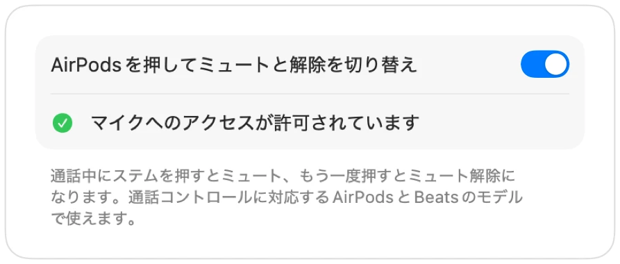

MacでAirPodsのミュートが機能しない場合の解決策
macOSではAirPodsのステムを押して通話をミュートできますが、通話Appが対応している必要があります。Chromeやブラウザ上の通話など、多くのAppは未対応です。本体を押しても短いエラー音が鳴り、「マイクを制御できません」と表示されて声は相手に聞こえたままになります。
Muffleを使えば、どのAppでもAirPodsでのミュートが可能になります。ステムの操作を受け取ってMacのマイクをミュートし、通常のミュート音を鳴らします。
どのAppでもAirPodsのミュート操作を使えるようにする手順
- 1
Muffleをインストールし、「マイクへのアクセスを許可」します。macOSはマイクを使用できるAppにしかボタン操作を伝えません。
- 2
「Muffleの設定」で「AirPodsを押してミュートと解除を切り替え」がオンになっていることを確認します。
- 3
通話に参加します。ボタン操作によるミュートは、いずれかのAppがマイクを使用しているときのみ機能します。
- 4
ステムを1回押すとミュート、もう一度押すとミュート解除になります。

- 通話中以外は、通常どおりステムの操作で音楽の再生や一時停止ができます。
- 通話コントロールの操作方法を変更している場合は、「システム設定」のAirPodsの設定を確認してください。
よくある質問
AirPodsを押したときにMacからエラー音が鳴るのはなぜですか？
通話中のAppがAirPodsのミュート操作に対応していないため、macOSによって拒絶されるからです。Muffleを実行していれば、ボタン操作で確実にマイクがミュートされます。
ミュート操作に対応しているAirPodsのモデルはどれですか？
AirPods Pro、AirPods（第3世代）以降、AirPods Max、および通話コントロールに対応したBeatsの各モデルです。